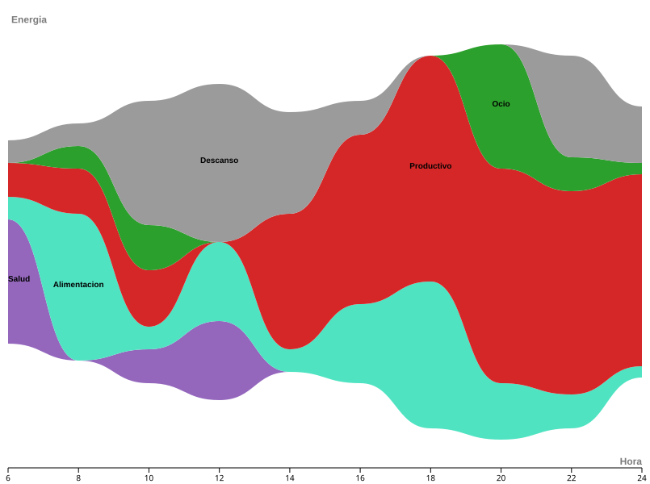

TP1: Análisis de datos
Performance & Habits Insights: Un análisis de mi rendimiento y rutinas durante marzo y abril de 2026. Este trabajo busca entender cómo varían mis niveles de productividad según las actividades que realizo cada día.

Este gráfico muestra cómo cambian mis actividades principales día a día. Permite ver que mi energía no es siempre la misma, sino que sube y baja dependiendo de cuánto descanso o cuánto trabajo.
Visualización creada con RAWGraphs
Al ver los promedios de la semana, se nota que los lunes y martes por la mañana son mis momentos de más energía. En cambio, los fines de semana empiezo el día con un ritmo mucho más tranquilo.
Visualización creada con Flourish